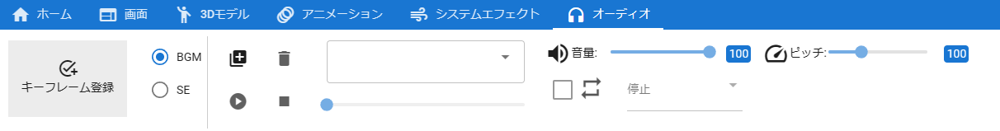

9.12. Audio
Audio properties. You can find this in the Audio tab of the Ribbon bar.

Switches the type of audio to operate.

Load the audio file you want to use. Removes imported audio.

Targets the loaded audio for manipulation.

Select the audio state for keyframe registration.
Play/pause/seek for preview.
Warning
SE cannot seek.
Toggles loop playback.
Change the volume.
Change the pitch of audio.